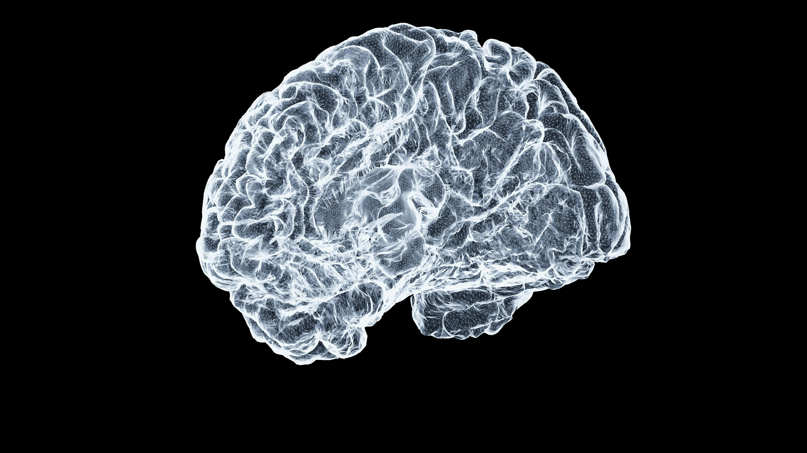

UNDERSTANDING SLEEP
The stages of sleep
Sleep is divided into two main types: non-rapid eye movement (NREM) sleep and rapid eye movement (REM) sleep. Throughout the night, we move between these stages in repeating cycles.

Light sleep
During the first stages of NREM sleep, our breathing and heart rate slow down. We gradually become less aware of our surroundings.
Deep sleep
Deep NREM sleep is especially important for physical restoration. It is also involved in memory processing.
REM sleep
During REM sleep, brain activity increases and vivid dreams are common. This stage is associated with memory and emotional processing.
Our internal body clock
The circadian rhythm is an internal biological cycle that helps regulate when we feel awake or sleepy. Light is one of the most important signals that keeps this rhythm aligned with the day and night.
Why sleep matters
Getting enough sleep supports attention, memory, mood, and overall health. Sleep is not simply a break from being awake. It is an active process that helps the brain and body function properly.